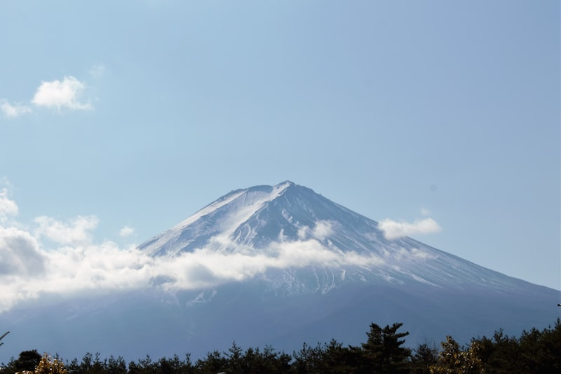
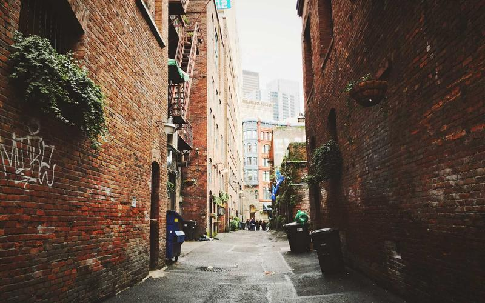
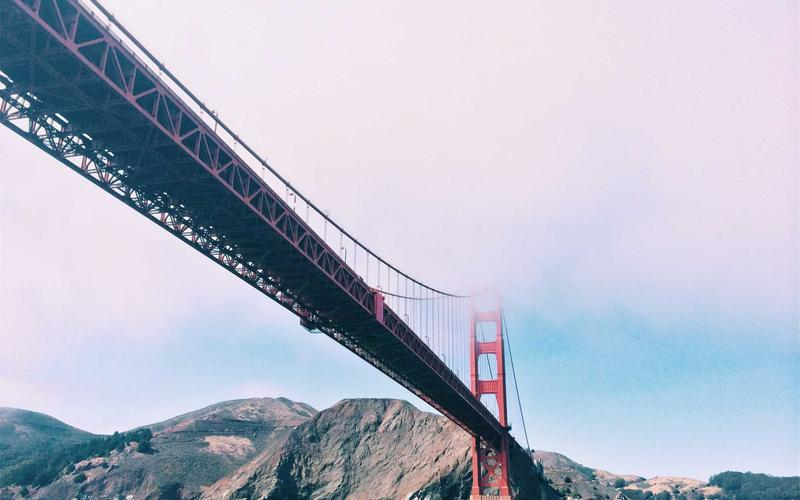
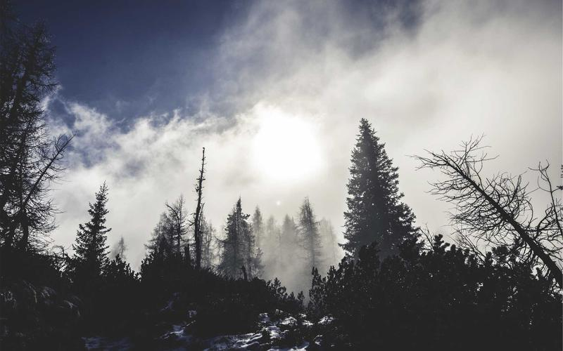
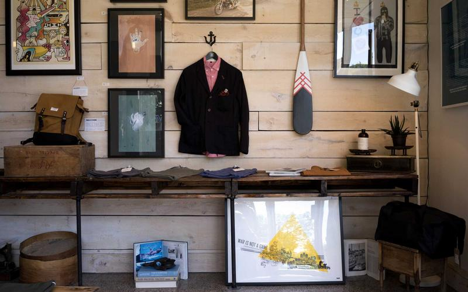
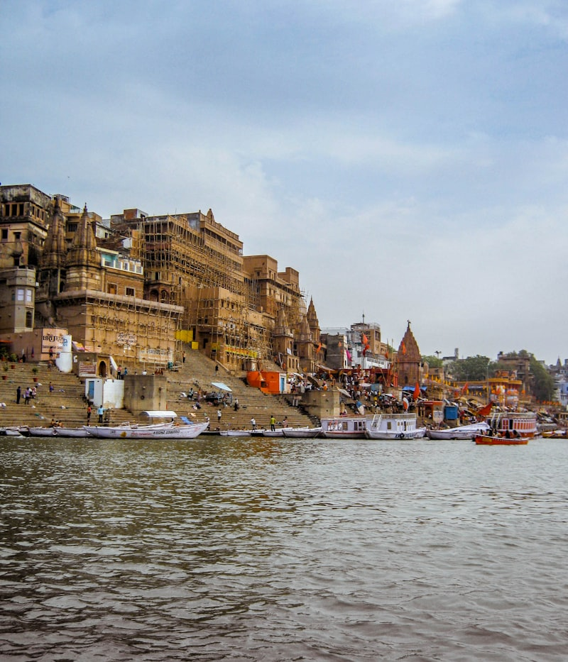
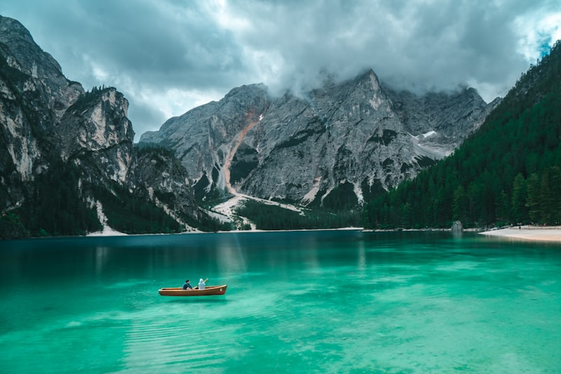
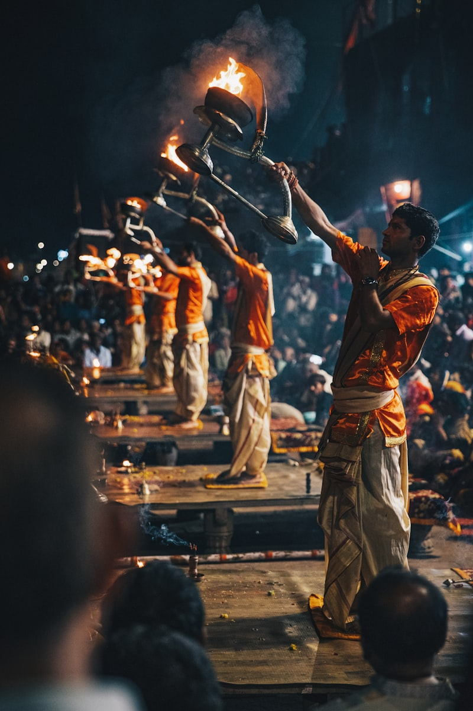

Chitrakoot Dham
The sacred town where Lord Rama spent his exile. Highly recommended pilgrimage day trip covering Ramghat, Kamadgiri, and Gupt Godavari.
Distance: ~78 KM
Book Route →
Routes We Love
Explore the spiritual and architectural wonders of Madhya Pradesh with our expert local drivers.

The sacred town where Lord Rama spent his exile. Highly recommended pilgrimage day trip covering Ramghat, Kamadgiri, and Gupt Godavari.

UNESCO World Heritage site legendary for its majestic medieval Hindu and Jain temples adorned with intricate, beautiful sculptures.

The holy temple of Sharda Devi nestled atop Trikuta Hill. We provide comfortable pilgrim drops and return journeys with family-friendly drivers.

Rich wildlife sanctuary home to tigers, leopards, and diverse flora. Perfect weekend getaway for nature lovers and jungle safaris.

A breathtaking 70-meter waterfall on the Tons River near Rewa, creating an awe-inspiring natural spectacle amid lush green valleys.

The world's first White Tiger Safari and Zoo. Great family excursion route to witness the rare and majestic white big cats in their natural habitat.
Famous for towering marble rocks carving the Narmada River, boating under moonlight, and the roaring Dhuandhar Falls.
A deeply revered temple dedicated to Lord Hanuman in Chhatarpur district. We offer specialized day-long outstation cabs for pilgrims.

The birth city of Lord Rama and home to the grand Shri Ram Janmabhoomi Temple. Travel safely with our expert highway drivers.

One of the oldest continually inhabited cities. Renowned for spiritual Ganga Aarti, ancient temples, and iconic ghats.

The sacred holy meeting point of Ganges, Yamuna, and Saraswati (Triveni Sangam). Ideal weekend outstation trip from Satna.

Home to the sacred Mahakaleshwar Jyotirlinga temple. Book our special multi-day packages to travel comfortably with premium cars.